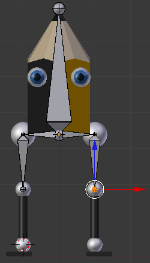

Las mallas
Lapintef
Nuestro personaje se llama Lapintef. Le hemos aplicado rotaciones y escalado (Objeto/Aplicar/Rotación y escalado) a todos los objetos que lo conforman. Y estas son las características de su modelado:
- Los nombres de los objetos tienen un sufijo ".L" o ".R" (left o right, izquierda o derecha). En los objetos esto es una simple ayuda para la organización pero en los huesos estos sufijos serán interpretados correctamente por Blender y nos ahorrará mucho trabajo y tiempo al hacer animaciones. Así que consideramos una buena costumbre añadir estos sufijos a las mallas también.
- cabeza es un único objeto con cuatro materiales distintos.
- ojo es una malla con tres materiales. Es importante para la localización de los huesos que sus Orígenes estén bien situados en los centros de las esferas.
- cadera_femur es el resultado de unir (Objeto/Unión) una esfera con un cilindro. En el momento de esa edición se cuidó el detalle de hacer que la esfera fuera el objeto dominante para que el Origen se conservara en su centro. Eso facilitará la localización del hueso en su momento.
- rodilla_tibia es exactamente igual que el anterior y se cuido de nuevo el mismo detalle para el tema del Origen.
- tobillo_pie repite la misma filosofía que en los dos casos anteriores.
Seleccionamos los dos objetos cadera_femur para hacer Malla/Adherencia/Cursor a seleccionado.
Ese es el lugar ideal para sacar el primer hueso, así que pasamos a Modo Objeto  para hacer Añadir/Esqueleto/Hueso único. En la siguiente imagen lo mostramos en sombreado Alambre.
para hacer Añadir/Esqueleto/Hueso único. En la siguiente imagen lo mostramos en sombreado Alambre.
La opción ideal para seguir trabajando en sombreado Sólido y que se vean claramente los huesos está en el panel Objeto  . Vamos a la botonera Mostrar y activamos la opción Rayos-X (lógicamente ese hueso debe estar seleccionado).
. Vamos a la botonera Mostrar y activamos la opción Rayos-X (lógicamente ese hueso debe estar seleccionado).
Si en un proceso de modelado es muy recomendable poner nombre a los distintos objetos, en el rigging podemos
afirmar que si continuamos adelante sin nombrar a los diferentes huesos
el caos aparecerá más pronto que tarde. Para poner nombre usamos el
mismo sitio de siempre en el cuadro Propiedades ("N") pero fijándonos de estar en Modo Edición  . Es posible ponerle nombre al esqueleto entero (Armature, por defecto) y a los huesos individualmente. A este hueso lo llamamos cabeza. En la siguiente captura ya aparece el hueso con la cola desplazada en Z ("GZ") para ocupar un lugar más adecuado.
. Es posible ponerle nombre al esqueleto entero (Armature, por defecto) y a los huesos individualmente. A este hueso lo llamamos cabeza. En la siguiente captura ya aparece el hueso con la cola desplazada en Z ("GZ") para ocupar un lugar más adecuado.
Con algo seleccionado del hueso en Modo Edición  nos vamos a las opciones del cuadro Herramientas ("T") para activar la opción Simetría X.
nos vamos a las opciones del cuadro Herramientas ("T") para activar la opción Simetría X.
Nos colocamos en un punto de vista frontal ("NumPad 1") y ortográfico ("NumPad 5") y seleccionamos la cabeza del hueso.
Ahora hay que hacer una extrusión un tanto peculiar. La extrusión normal ("E") está reservada para crear un hueso sin tener en cuenta la opción Simetría X mientras que para aprovecharnos de esta herramienta debemos dar la orden con "Shift_E".
LLega el trabajo farragoso porque para que el esqueleto haga bien su trabajo es necesario garantizar la precisión. Si nos fijamos en la anterior imagen las colas de los nuevos huesos no están en el centro de las esferas de las caderas. Hacerlo "a ojo" no es una buena opción, así que usamos las adherencias:
- En Modo Objeto
 seleccionamos cadera_femur.L y hacemos Objeto/Adherencia/Cursor a selecionado.
seleccionamos cadera_femur.L y hacemos Objeto/Adherencia/Cursor a selecionado.
- En Modo Edición
 seleccionamos la cola del hueso y hacemos Esqueleto/Adherencia/Selección a cursor.
seleccionamos la cola del hueso y hacemos Esqueleto/Adherencia/Selección a cursor.
Algo ha quedado mal y no perderemos tiempo en solucionarlo. Los huesos tienen un ligero giro en el eje X (rojo) y eso es mal augurio. Lo corregimos de inmediato en el panel Hueso (aprovechamos para usar este panel para renombrar el hueso, si no lo hemos hecho ya, a cadera.L)
Hacemos lo mismo con el hueso cadera.R. Es muy importante renombrar con los sufijos tal y como hemos dicho o la extrusión ("Shift_E") no funcionará bien. Una opción interesante es no nombrar durante el proceso de extrusionado en espejo y hacer ese protocolo al final.
Continuamos con el rigging extruyendo ("Shift_E") desde la cola del hueso cadera.L (y cadera.R), después usamos las adherencias para garantizar que la cola del nuevo hueso, al que llamaremos femur.L (y femur.R), caiga en el centro de la rodilla y solucionamos la posible rotación.
Hacemos lo mismo para diseñar el hueso tibia.L (y tibia.R).
Desde "Numpad 3" hacemos la última extrusión ("Shift_E") para crear el hueso pie.L (y pie.R).
Este es un resumen visual de lo que tenemos hasta ahora.
Los ojos
También los ojos necesitan sus huesos en el rigging. Tienen que tener la cabeza en el centro de las esferas y apuntar en la dirección de la mirada (eje Y). Además tienen que ser hijos del hueso cabeza.
Seleccionamos la cola del hueso cabeza y hacemos una extrusión con espejo ("Shift_E") y en el desplazamiento anclamos en el eje X para que no se incline.

El problema es que el ser hijos del hueso cabeza están conectados a este. Ahora:
- Seleccionamos el hueso ojo.L (que así lo habremos llamado) y nos vamos al panel de Hueso para desactivar la opción Conectado en la botonera Relaciones.

- Repetimos lo mismo para ojo.R. Ya podremos separarlos sin que dejen de ser hijos del hueso cabeza.
- Seleccionamos ojo.L y lo rotamos -90º (negativo) en Z ("RZ-90") y lo mismo hacemos con ojo.R, sólo que en este caso el valor de 90 es positivo..
- Usamos el conocido método de las adherencias para garantizar que se colocan en el sitio previsto. La única novedad es que al hacer Selección a cursor debemos seleccionar todo el hueso para que no se descoloque respecto al eje X.
Desplazamos las colas en el eje Y para conseguir una proporción más moderada.

Hemos concluido el rigging de base. Con esto poco se puede hacer pero en los apartados siguientes aprenderemos a perfeccionarlo al hilo de los inconvenientes que se detecten tras el skinning.